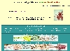
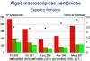

| Páginas
subordinadas:  Clave_general.html |
 Algas_verdes.htm |

Algas_pardas.htm |
 Algas_rojas.htm |
 Algas_resumen.htm |
| Páginas
subordinadas:  Clave_general.html |
Algas_verdes.htm |
Algas_pardas.htm |
Algas_rojas.htm |
 Algas_resumen.htm |
| -Muy rara: | uno o varios ejemplares observados en un solo lugar y en una sola ocasión |
| -Rara: | 1-2 localidades en la provincia, pero en varias ocasiones |
| -Poco frecuente: | 3-4 localidades en la provincia |
| -Frecuente: | 5-9 localidades por todo el litoral de una provincia ó 3-9 dentro de un sector |
| -Muy frecuente: | 10 ó más localidades repartidas por todo el litoral de la provincia |
| Región supralitoral | Afectada por las salpicaduras del oleaje |
|
Zona de influencia de las mareas |
| Región infralitoral | Zona bien iluminada y siempre cubierta por el agua |
| Región circalitoral* | Zona más profunda y menos iluminada dominada por formaciones coralígenas, con predominio de animales sésiles y algas rojas calcificadas |
* No existe un límite batimétrico
fijo para esta región, de la cual existen pocos datos publicados
referentes a las algas de Andalucía occidental.
A efectos prácticos se han considerado varios sectores de Oeste a Este en el litoral atlántico de Andalucía:
Provincia de Huelva:
Debido a su posición geográfica, el
litoral de Andalucía occidental incluye una mayoría de
especies
que se distribuyen tanto en el litoral atlántico de la
Península Ibérica como en el litoral mediterráneo.
En aquellas especies que se distribuyen sólo en el litoral
atlántico o en el mediterráneo se indica expresamente
esta circunstancia a continuación de la
indicación de frecuencia.
Al final del comentario de cada especie se indica la distribución a nivel mundial si se conoce, utilizando la tipología corológica dada por Giaccone & al. (1985) para las algas de Sicilia. Cuando se indica alguno de estos tipos de distribución se sobreentiende que el alga está presente en el Mediterráneo. Cuando no se indica ninguno es porque no ha podido ser tipificada su distribución.
| Elementos fitogeográficos de amplia distribución: | Cosmopolita |
| Subcosmopolita | |
| Holo atlántico-pacífico | |
| Holo indo-atlántico | |
| Atlántico | |
| Indo-pacífico | |
| Elementos fitogeográficos de afinidad templado-fría: | Circumboreo-austral |
| Circumboreal | |
| Atlántico-pacífico templado-frío | |
| Atlántico boreal | |
| Indo-atlántico templado-frío | |
| Elementos fitogeográficos de afinidad cálida: | Pantropical |
| Atlántico-pacífico tropical | |
| Indo-atlántico tropical | |
| Atlántico tropical | |
| Atlántico boreo-tropical | |
| Mediterráneo |
Los datos de tipo ecológico sobre el
fitobentos de nuestro litoral son escasos y fragmentarios. En el
estudio de Seoane-Camba (1965) se indican
observaciones sobre el hábitat y la fenología
(época de crecimiento y reproducción) de muchas especies,
sin embargo en otros casos sólo se han encontrado ejemplares
arrojados.
Como una primera aproximación se indica en
cada especie su pertenencia a alguno de los "grupos
ecológicos" definidos para el Noroeste del Mediterráneo
por Boudouresque (1984). Esta
terminología
presenta tres tipos de problemas. (1) En primer lugar, el concepto
mismo
de "grupo ecológico" es difícil de comprender y requiere
matizaciones que escapan a las pretensiones de esta guía. (2) En
segundo lugar, muchas algas presentes en Andalucía occidental no
están en el litoral del Noroeste del Mediterráneo. (3)
Por último,
no existe garantía de que el comportamiento
ecológico de una especie se mantenga en comunidades con
una composición florística diferente y sometidas a
diferentes condiciones ambientales.
Dado que en el Mediterráneo las mareas tienen
escasa amplitud, los términos "mesolitoral" e "infralitoral" no
tienen exactamente el mismo significado, por lo que no debe
extrañar que algas encontradas en zonas intermareales
pertenezcan a grupos ecológicos infralitorales en un contexto
mediterráneo. También conviene precisar que la
adscripción de una especie a un grupo ecológico concreto
no presupone que dicha especie se encuentre exclusivamente en el
biotopo característico del grupo.
| Grupos ecológicos | Ejemplos |
|---|---|
|
|
|
| Rocas mesolitorales en general | Chaetomorpha aerea |
| Rocas del horizonte superior | Porphyra linearis |
| Rocas del horizonte medio | Enteromorpha compressa |
| Rocas del horizonte inferior | Ralfsia verrucosa |
| Cornisa mesolitoral | Lithophyllum tortuosum |
| Borde inferior de la cordisa mesolitoral | Gelidium pusillum |
| Grutas mesolitorales | Hildenbrandia prototypus |
|
|
|
| Fotófilas infralitorales en general | Jania rubens |
| Fotófilas de zonas batidas | Laurencia pinnatifida |
| Fotófilas de zonas calmas | Padina pavonica |
| Termófilas (aguas cálidas) | Halopitys incurvus |
| Termófilas de sustrato blando | Caulerpa prolifera |
|
(pueden vivir en lugares poco iluminados) |
|
| Infralitorales y circalitorales | Mesophyllum lichenoides |
| Infralitorales | Dictyopteris polypodioides |
|
|
|
| Superficiales en general | Pterocladia pinnata |
| Superficiales de zonas cálidas | Botryocladia botryoides |
| Superficiales de zonas frías | Plocamium cartilagineum |
|
|
|
| Esciófilas de zonas calmas | Peyssonnellia coriacea |
| Infralitorales de zonas calmas | Dictyopteris polypodioides |
| Infralitorales tolerantes | Halopteris filicina |
| Antisciófilas (paredes en extraplomo) | Udotea petiolata |
| Agregados coralígenos circalitorales | Halymenia floresiana |
| Reófilas (amigas de las corrientes) | Arthrocladia villosa |
|
|
|
| Fotófilas infralitorales portuarias | Ulva rigida |
| Eutróficas y tionitrófilas (materia orgánica, N y S) | Enteromorpha prolifera |
| Hemisciófilas (sustrato vertical) de pequeños puertos | Codium decorticatum |
|
|
|
| Infralitorales de sustrato duro | Asparagopsis armata |